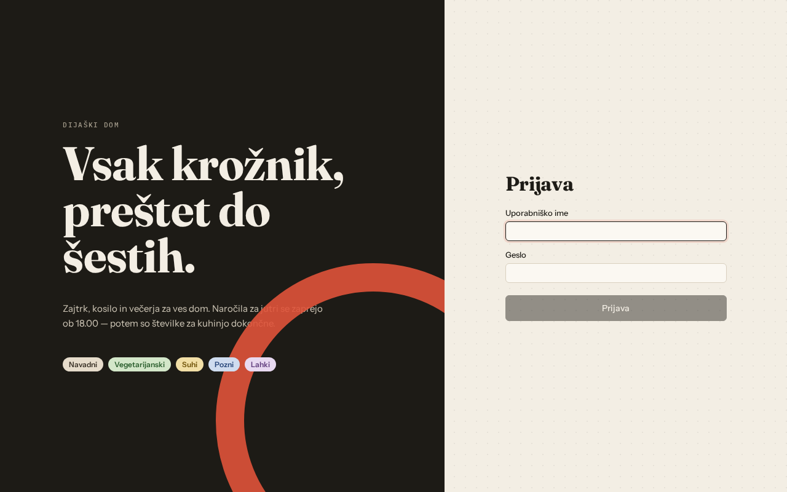
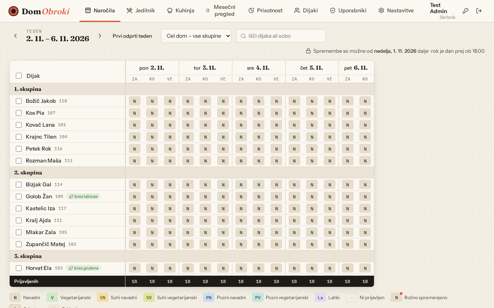
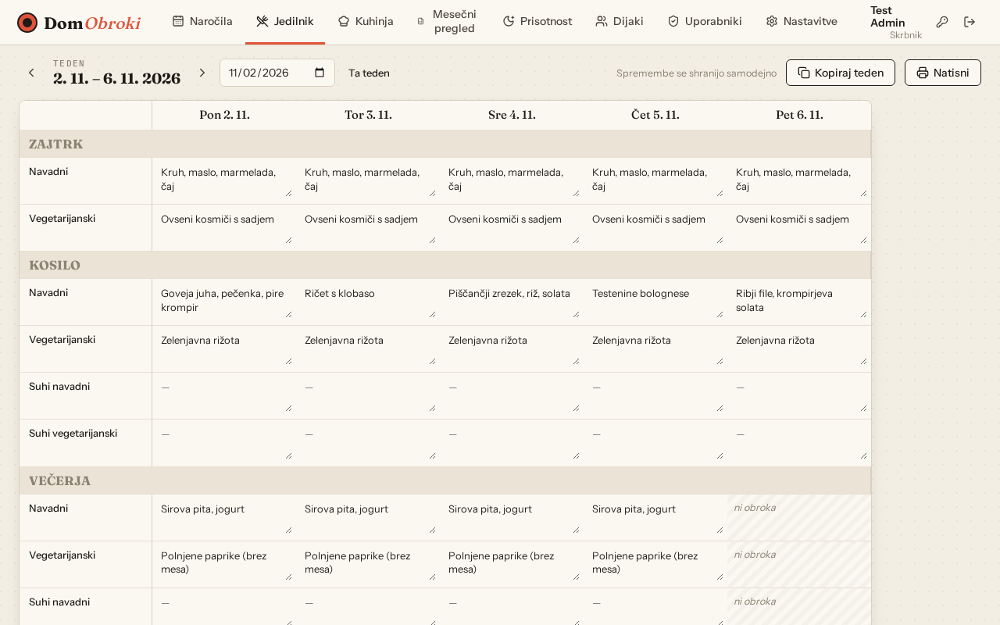
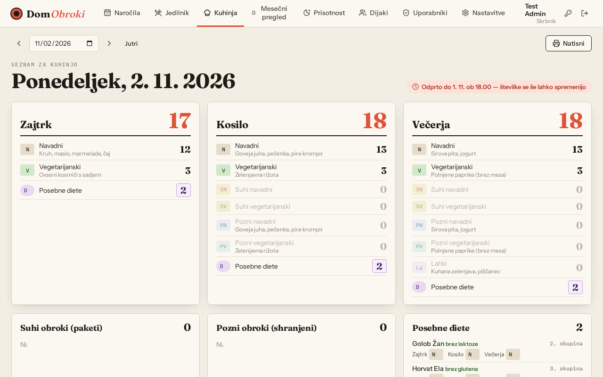
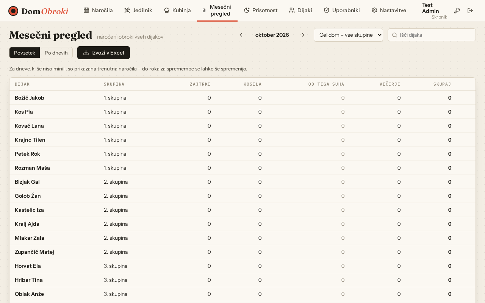
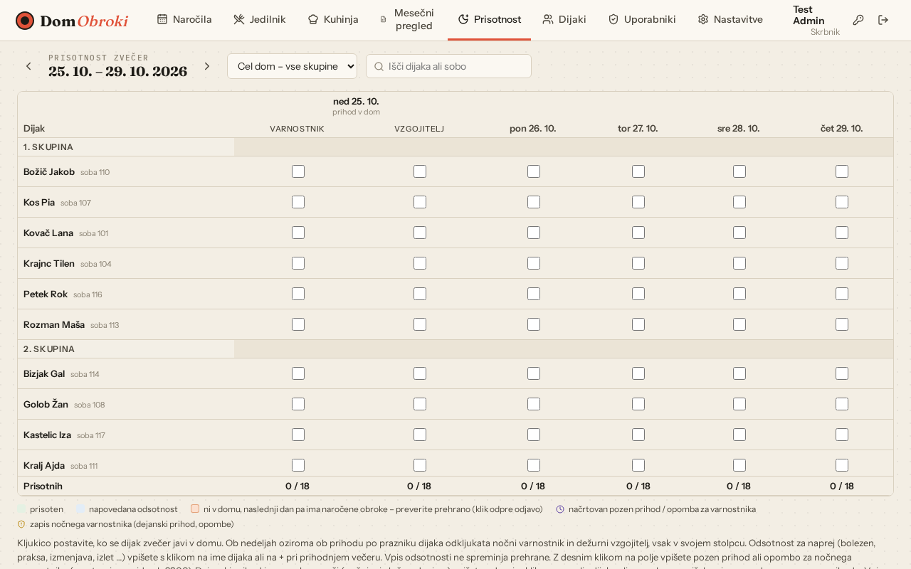
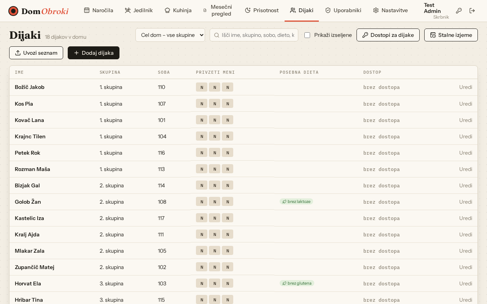
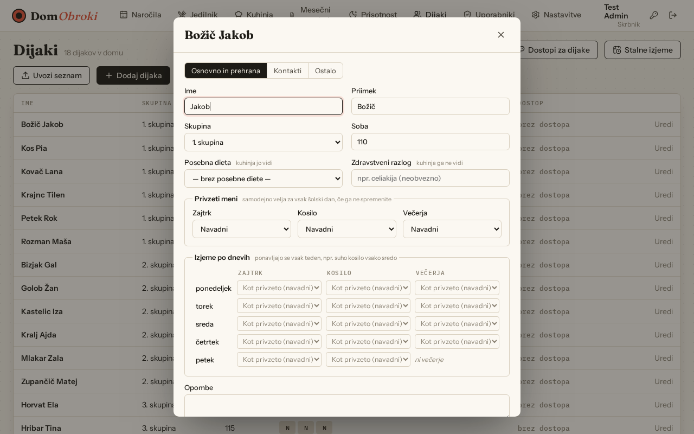
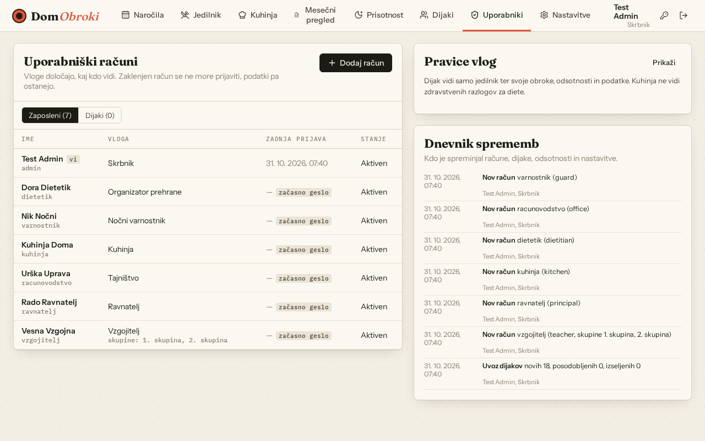
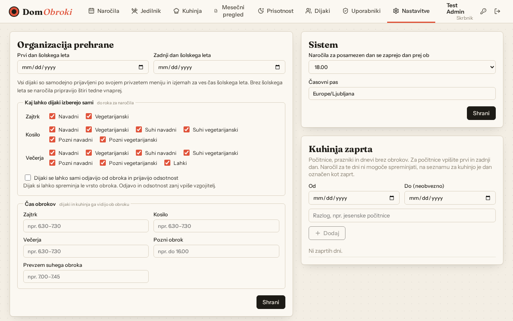

Navodila za uporabo · vsi posnetki zaslona vsebujejo izmišljene podatke
Aplikacijo odprete v brskalniku in se prijavite z uporabniškim imenom in geslom. Ob prvi prijavi z začasnim geslom vas aplikacija prosi, da si nastavite svoje (vsaj 8 znakov). Geslo kasneje spremenite z ikono ključa zgoraj desno, tam je tudi Odjava.

Kaj kdo vidi, je odvisno od vloge:
| Vloga | Zavihki |
|---|---|
| Skrbnik | Naročila, Jedilnik (urejanje), Kuhinja, Mesečni pregled, Prisotnost, Dijaki, Uporabniki, Nastavitve |
| Ravnatelj | Naročila, Jedilnik, Kuhinja, Mesečni pregled, Prisotnost, Dijaki, Uporabniki |
| Vzgojitelj | Naročila, Jedilnik, Kuhinja, Prisotnost, Dijaki |
| Organizator prehrane | Naročila, Jedilnik (urejanje), Kuhinja, Mesečni pregled, Dijaki (samo diete), Nastavitve |
| Kuhinja | Jedilnik, Kuhinja |
| Tajništvo | Jedilnik, Mesečni pregled |
| Nočni varnostnik | Prisotnost |
| Dijak | Moji obroki, Jedilnik |
Posameznemu zaposlenemu lahko skrbnik ali ravnatelj dodeli še dodatne pravice (npr. naročila ali jedilnik).








